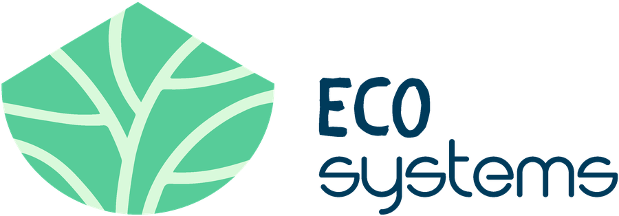

Jóvenes
Participa en un intercambio o formación y vive una experiencia internacional en plena naturaleza.
Ver oportunidades
El micelio une, nutre y hace crecer todo lo que toca. Nosotros creemos en esa misma fuerza: personas conectadas que generan oportunidades. Seas quien seas, siempre hay una manera de formar parte de esta red y hacerla crecer.
Participa en un intercambio o formación y vive una experiencia internacional en plena naturaleza.
Ver oportunidades¿Necesitas una entidad socia para tu proyecto? Descarga nuestro último PIF y hablemos.
Descargar PIFSuma tu tiempo y talento a nuestras actividades de educación ambiental y expresión artística.
Quiero ayudarComparte nuestros proyectos en redes sociales y ayúdanos a llegar a más jóvenes y comunidades.
SíguenosAsociaciones y espacios con los que hemos compartido proyectos, ideas y raíces. Toca un punto del mapa para descubrir cada colaboración.
Toca cualquier punto verde del mapa —o su nombre en la lista— para conocer a cada colaborador.
Institut de Recerca Holística de Montserrat: comunidad rural dedicada a la sostenibilidad, la agroecología y el crecimiento personal.
Espacio social y comunitario que experimenta con la cooperación, la autogestión y la vida en equilibrio con el entorno natural.
Masía en el Parque Natural del Montseny, un espacio para desacelerar, conectar con la naturaleza y vivir en comunidad.
Proyecto artístico que impulsa la creación escénica y la descentralización cultural en el territorio del Ripollès.
3 colaboraciones en la ciudad — toca una para conocerla.
Asociación de facilitadoras que promueve el bienestar psicosocial a través del arte, el movimiento y la Biodanza.
Colectivo interdisciplinar artístico centrado en la creación documental, comunitaria y de memoria viva.
Federación de Entidades Latinoamericanas de Catalunya, referente en interculturalidad y acogida al colectivo migrante.

Formamos parte de ECOSystems, una iniciativa europea que une jóvenes, comunidades y organizaciones para promover la sostenibilidad, la inclusión y la educación ambiental.
Un espacio para compartir aprendizajes, crear conexiones y descubrir nuevas formas de cuidar nuestro entorno desde la participación y la acción colectiva.
Somos una entidad sin ánimo de lucro que crece gracias al apoyo de empresas, administraciones públicas y personas comprometidas con nuestra misión.
Si quieres contribuir a que sigamos impulsando proyectos con impacto social, puedes realizar una aportación económica. Envíanos un mensaje y te explicaremos las distintas formas de colaborar.
Cada contribución, independientemente de su importe, fortalece esta red y nos ayuda a seguir haciendo crecer nuestro micelio: una comunidad conectada que genera oportunidades y transforma su entorno.